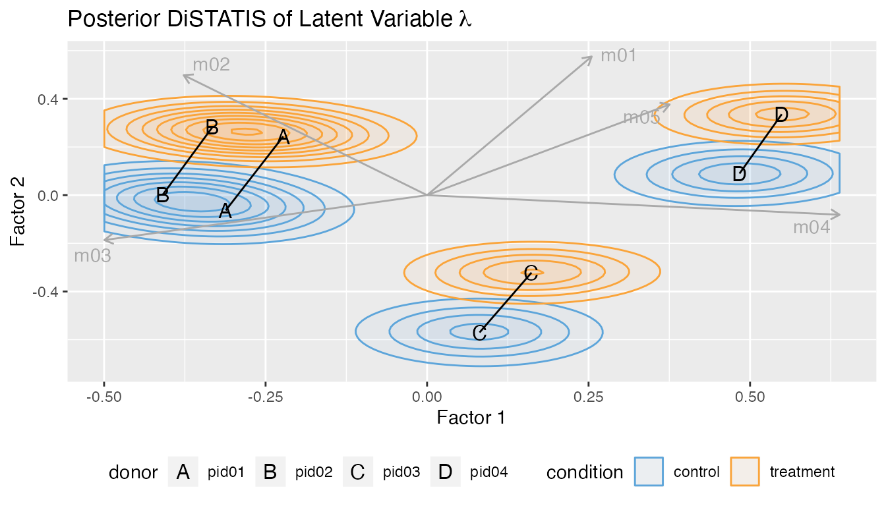

In this vignette, we show the cytoeffect workflow for
both the full Bayesian hierarchical model and the parametric bootstrap
with the simplified model.
Generate Data
Simulate dataset.
set.seed(1)
df = simulate_data()
str(df)
#> tibble [800 × 7] (S3: tbl_df/tbl/data.frame)
#> $ donor : chr [1:800] "pid01" "pid01" "pid01" "pid01" ...
#> $ condition: Factor w/ 2 levels "control","treatment": 2 2 2 2 2 2 2 2 2 2 ...
#> $ m01 : num [1:800] 54 11 17 26 73 49 44 100 235 32 ...
#> $ m02 : num [1:800] 19 0 11 21 32 3 7 78 52 32 ...
#> $ m03 : num [1:800] 7 0 11 29 4 16 7 1 4 8 ...
#> $ m04 : num [1:800] 2 1 0 50 3 0 0 6 4 0 ...
#> $ m05 : num [1:800] 10 0 3 0 7 4 2 1 4 11 ...
df
#> # A tibble: 800 × 7
#> donor condition m01 m02 m03 m04 m05
#> <chr> <fct> <dbl> <dbl> <dbl> <dbl> <dbl>
#> 1 pid01 treatment 54 19 7 2 10
#> 2 pid01 treatment 11 0 0 1 0
#> 3 pid01 treatment 17 11 11 0 3
#> 4 pid01 treatment 26 21 29 50 0
#> 5 pid01 treatment 73 32 4 3 7
#> 6 pid01 treatment 49 3 16 0 4
#> 7 pid01 treatment 44 7 7 0 2
#> 8 pid01 treatment 100 78 1 6 1
#> 9 pid01 treatment 235 52 4 4 4
#> 10 pid01 treatment 32 32 8 0 11
#> # … with 790 more rows
condition = "condition"
group = "donor"
protein_names = names(df)[3:ncol(df)]Bayesian Inference
Sample from posterior distribution using Stan.
fit = poisson_lognormal(df,
protein_names = protein_names,
condition = condition,
group = group,
r_donor = 2,
warmup = 200, iter = 325, adapt_delta = 0.8,
num_chains = 1)
#>
#> SAMPLING FOR MODEL 'poisson' NOW (CHAIN 1).
#> Chain 1:
#> Chain 1: Gradient evaluation took 0.000562 seconds
#> Chain 1: 1000 transitions using 10 leapfrog steps per transition would take 5.62 seconds.
#> Chain 1: Adjust your expectations accordingly!
#> Chain 1:
#> Chain 1:
#> Chain 1: Iteration: 1 / 325 [ 0%] (Warmup)
#> Chain 1: Iteration: 32 / 325 [ 9%] (Warmup)
#> Chain 1: Iteration: 64 / 325 [ 19%] (Warmup)
#> Chain 1: Iteration: 96 / 325 [ 29%] (Warmup)
#> Chain 1: Iteration: 128 / 325 [ 39%] (Warmup)
#> Chain 1: Iteration: 160 / 325 [ 49%] (Warmup)
#> Chain 1: Iteration: 192 / 325 [ 59%] (Warmup)
#> Chain 1: Iteration: 201 / 325 [ 61%] (Sampling)
#> Chain 1: Iteration: 232 / 325 [ 71%] (Sampling)
#> Chain 1: Iteration: 264 / 325 [ 81%] (Sampling)
#> Chain 1: Iteration: 296 / 325 [ 91%] (Sampling)
#> Chain 1: Iteration: 325 / 325 [100%] (Sampling)
#> Chain 1:
#> Chain 1: Elapsed Time: 69.3013 seconds (Warm-up)
#> Chain 1: 56.5236 seconds (Sampling)
#> Chain 1: 125.825 seconds (Total)
#> Chain 1:Plot marginal credible intervals.
plot(fit, type = "theta")
plot(fit, type = "beta")
plot_pairs(fit, "m01", "m02", "m03")
plot(fit, type = "sigma")
#> New names:
#> • `` -> `...1`
#> • `` -> `...2`
#> • `` -> `...3`
#> • `` -> `...4`
#> • `` -> `...5`
#> • `` -> `...6`
#> • `` -> `...7`
#> • `` -> `...8`
#> • `` -> `...9`
#> • `` -> `...10`
#> • `` -> `...11`
#> • `` -> `...12`
#> • `` -> `...13`
#> • `` -> `...14`
#> • `` -> `...15`
#> • `` -> `...16`
#> • `` -> `...17`
#> • `` -> `...18`
#> • `` -> `...19`
#> • `` -> `...20`
#> • `` -> `...21`
#> • `` -> `...22`
#> • `` -> `...23`
#> • `` -> `...24`
#> • `` -> `...25`
#> • `` -> `...26`
#> • `` -> `...27`
#> • `` -> `...28`
#> • `` -> `...29`
#> • `` -> `...30`
#> • `` -> `...31`
#> • `` -> `...32`
#> • `` -> `...33`
#> • `` -> `...34`
#> • `` -> `...35`
#> • `` -> `...36`
#> • `` -> `...37`
#> • `` -> `...38`
#> • `` -> `...39`
#> • `` -> `...40`
#> • `` -> `...41`
#> • `` -> `...42`
#> • `` -> `...43`
#> • `` -> `...44`
#> • `` -> `...45`
#> • `` -> `...46`
#> • `` -> `...47`
#> • `` -> `...48`
#> • `` -> `...49`
#> • `` -> `...50`
#> • `` -> `...51`
#> • `` -> `...52`
#> • `` -> `...53`
#> • `` -> `...54`
#> • `` -> `...55`
#> • `` -> `...56`
#> • `` -> `...57`
#> • `` -> `...58`
#> • `` -> `...59`
#> • `` -> `...60`
#> • `` -> `...61`
#> • `` -> `...62`
#> • `` -> `...63`
#> • `` -> `...64`
#> • `` -> `...65`
#> • `` -> `...66`
#> • `` -> `...67`
#> • `` -> `...68`
#> • `` -> `...69`
#> • `` -> `...70`
#> • `` -> `...71`
#> • `` -> `...72`
#> • `` -> `...73`
#> • `` -> `...74`
#> • `` -> `...75`
#> • `` -> `...76`
#> • `` -> `...77`
#> • `` -> `...78`
#> • `` -> `...79`
#> • `` -> `...80`
#> • `` -> `...81`
#> • `` -> `...82`
#> • `` -> `...83`
#> • `` -> `...84`
#> • `` -> `...85`
#> • `` -> `...86`
#> • `` -> `...87`
#> • `` -> `...88`
#> • `` -> `...89`
#> • `` -> `...90`
#> • `` -> `...91`
#> • `` -> `...92`
#> • `` -> `...93`
#> • `` -> `...94`
#> • `` -> `...95`
#> • `` -> `...96`
#> • `` -> `...97`
#> • `` -> `...98`
#> • `` -> `...99`
#> • `` -> `...100`
#> • `` -> `...101`
#> • `` -> `...102`
#> • `` -> `...103`
#> • `` -> `...104`
#> • `` -> `...105`
#> • `` -> `...106`
#> • `` -> `...107`
#> • `` -> `...108`
#> • `` -> `...109`
#> • `` -> `...110`
#> • `` -> `...111`
#> • `` -> `...112`
#> • `` -> `...113`
#> • `` -> `...114`
#> • `` -> `...115`
#> • `` -> `...116`
#> • `` -> `...117`
#> • `` -> `...118`
#> • `` -> `...119`
#> • `` -> `...120`
#> • `` -> `...121`
#> • `` -> `...122`
#> • `` -> `...123`
#> • `` -> `...124`
#> • `` -> `...125`
plot(fit, type = "Cor")
#> [[1]]
#>
#> [[2]]
Multivariate DiSTATIS plot.
plot_distatis(fit, ndraws = 125)
#> Warning: The `.dots` argument of `group_by()` is deprecated as of dplyr 1.0.0.
#> ℹ The deprecated feature was likely used in the dplyr package.
#> Please report the issue at <
Frequentist Inference
Fit model using composite maximum likelihood estimatation.
fit = poisson_lognormal_mcle(df,
protein_names = protein_names,
condition = condition,
group = group,
ncores = 1)Plot marginal credible intervals.
plot(fit, type = "beta")
#> New names:
#> • `` -> `...1`
#> • `` -> `...2`
#> • `` -> `...3`
#> • `` -> `...4`
#> • `` -> `...5`
#> • `` -> `...6`
#> • `` -> `...7`
#> • `` -> `...8`
plot(fit, type = "sigma")
#> New names:
#> • `` -> `...1`
#> • `` -> `...2`
#> • `` -> `...3`
#> • `` -> `...4`
#> • `` -> `...5`
#> • `` -> `...6`
#> • `` -> `...7`
#> • `` -> `...8`
plot(fit, type = "Cor")
Multivariate DiSTATIS plot.
plot_distatis(fit, ndraws = 125)